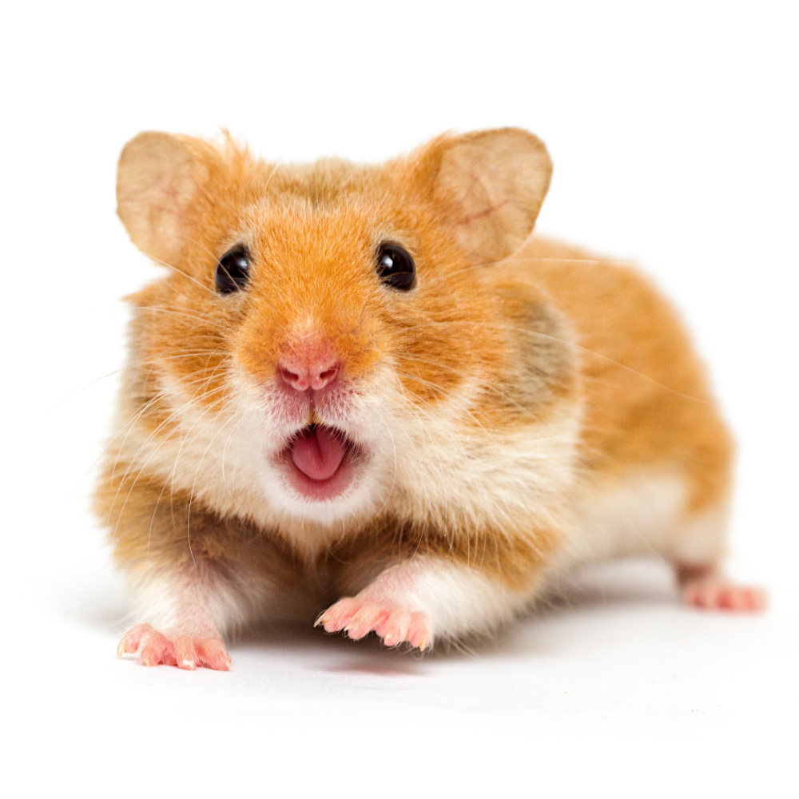
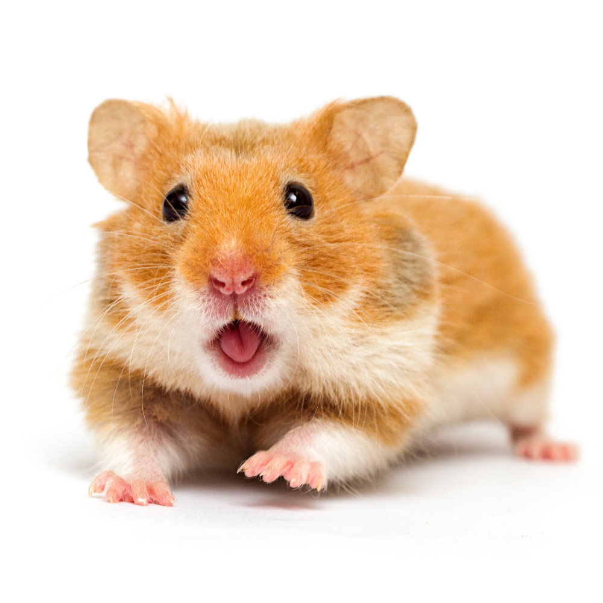

Archangel: Pequeño blog informativo
Primera entrada de blog personal: 13/03/2024
 

COMPARTIR


HAMSTERS
- Cricetino (cricetinae) se le conoce coloquialmente con el nombre de hámster, pertenece a la familia de los roedores múridos y se tiene constancia de que existen aproximadamente 18 especies distintas, proviene de Oriente Medio y del sureste de Estados Unidos
- Existen diferentes tipos de Hamsters, algunos son:
-
"Mesocricetus auratus"
El hámster dorado o sirio (Mesocricetus auratus) es una especie de roedor de la familia Cricetidae, que se encuentra en estado salvaje, se considera en peligro de extinción, pero es popular como mascota y lamentablemente se usa en la investigación científica, estos seres al ser adultos miden de 10 a 12 cm de longitud, y por lo general tienen una vida media de dos a tres años
El hámster sirio tiene bolsas ampliables llamadas abazones, que se extienden desde sus mejillas a sus hombros "padre de alforjas" (en árabe: أبو جراب), debido a la notable cantidad de espacio de almacenamiento en las bolsas de sus mejillas.
Algunas características son:
- Longitud: alrededor de los 10 cm.
- Peso: 120 g.
- Ojos: grandes y de color negro o rojo oscuro.
- Pelaje: de color castaño y blanco en el vientre y garganta, por lo que es brillante.
- Carácter: afectuoso e inteligente. Simpático y muy activo. A veces miedoso y agresivo.
-
"Phodopus sungorus"
Estos pequeños seres se pueden encontrar en dos colores, gris y blanco, suelen tener el color gris con una raya dorsal negra a lo largo de la espalda y el vientre blanco o bien pueden tener el blanco predominantes en todo el cuerpo
Su comportamiento es activo, juguetón y me muestra más activo al atardecer aunque también pueden estar activos en períodos cortos durante el día, son animales que les gusta mucho escalar, investigar y trepar, y por lo tanto, prefieren jaulas con doble piso
Algunas características son:
- Peso: entre 35 a 50 gr
- Esperanza de vida: entre 1,5 - 2,5 años
- Tamaño: entre 7 y 10 cm
- Construye galerías bajo el subsuelo
- Propenso a enfermedades como cancer
-
"Phodopus sungorus"
El hámster ruso (Phodopus sungorus) es una especie de roedor miomorfo de la familia Cricetidae, originario de Kazajistán y el suroeste de Siberia, y no se reconocen subespecies, mal visto como mascota, ya que sus cuidados se limitan prácticamente a la alimentación e higiene de la vivienda; sin embargo, al igual que el resto de las especies domésticas de hámster, también es importante brindarle un espacio mínimo de 2800 cm3, para así evitar que padezcan de estrés.
Algunas de sus características son:
- tamaño, de 7 a 10 cm de longitud
- 35 a 50 g de peso
- Gordo bachicha (rechoncho)
- Solitario
- Propenso a morder si se siente amenazado
-
"Phodopus roborovskii"
Es una especie de roedor miomorfo de la familia Cricetidae propio de Asia, no se reconocen subespecies, tiene una cola corta y por la planta velluda de los miembros posteriores,su pelaje es fino y suave, de color gris en el dorso y blanco en las partes inferiores, cola y alrededor de la boca, con variaciones de color según la zona, sobre cada ojo presenta una pequeña mancha blanca. Tiene grandes abazones que le permiten transportar los alimentos
Algunas de sus características son:
- Mide hasta 9 cm
- El pelaje más fino
- Habitos nocturnos
- NO HIBERNA
- Su alimento principal son semillas
-
"Cricetulus barabensis griseus"
El hasmter chino, roedor del género Cricetulus de la subfamilia Cricetidae que se originó en los desiertos del norte de China y Mongolia, su cola inusualmente es larga en comparación con otros hámsters, la mayoría de los cuales tienen colas cortas, estos seres son principalmente nocturnos, aunque permanecerán despiertos por períodos breves, entre siestas, durante el día.
Algunas características son:
- Su cuerpo es largo y degalgo
- Su color nativo es marrón
- Mide entre 8 y 13 cm de longitud
- Vive de 2 a 4 años con buenos cuidados
- Animal de compañia
-
"Mesocricetus auratus"
- Algunos videos para su observación
--
- MAPA AL TECNOLOGICO (HOGAR DE ESTA PAGINA)
- SOMOS UN PROYECTO NUEVO, DONANOS ALGO :)
Cualquier pregunta, no dudes en enviar un correo a las direcciones compartidas en el boton contact me